สร้างเวิร์กโฟลว์ AI ของคุณเองสำหรับงานซอฟต์แวร์
Bachata คือส่วนขยายของ VS Code ที่ให้ผู้ช่วย AI ทำงานร่วมกันตามขั้นตอนที่คุณจัดวาง: ตัวหนึ่งวางแผน อีกตัวโต้แย้ง ทั้งคู่ตรวจและแก้ไข แล้วคุณเป็นผู้ตัดสินว่าสิ่งใดสำคัญ
ภาพรวม
Bachata คืออะไร
ผู้ช่วย AI คือเครื่องมือที่คุณสั่งด้วยภาษาทั่วไปให้ช่วยงาน เช่น วางแผนฟีเจอร์ เขียนโค้ด หรือหาจุดบกพร่อง Bachata ทำงานอยู่ใน Visual Studio Code และประสานงานผู้ช่วยที่คุณมีอยู่แล้ว เช่น Codex และ Claude Code.
คุณจัดวางงานเป็น ไปป์ไลน์: ลำดับของขั้นตอน แต่ละขั้นมีบทบาท คำสั่ง และผู้ช่วยที่ลงมือทำ เช่น ผู้ตรวจสองคนอ่านโค้ดแยกกัน แล้วโต้แย้งข้อค้นพบของอีกฝ่ายจนกว่าจะเห็นตรงกัน หรือส่งข้อขัดแย้งนั้นมาให้คุณ
กำหนดรูปแบบการทำงาน
บทบาท คำสั่ง ลำดับขั้นตอน และจำนวนรอบการตรวจ
เลือกว่าใครทำงาน
กำหนด Codex, Claude Code หรือแชทในเบราว์เซอร์ให้แต่ละบทบาท
นำกลับมาใช้และปรับแต่ง
เริ่มจากไปป์ไลน์ที่มีมาให้ แก้ไขมัน หรือสร้างของคุณเอง
ติดตามผลลัพธ์
ข้อค้นพบ การตัดสินใจ และการเปลี่ยนแปลง พร้อมการตรวจสอบที่ทำงานจริง
Bachata ไม่ได้มาพร้อมบริการ AI หรือการสมัครสมาชิก และไม่เคยสร้างคอมมิต Git เลย AI ผิดพลาดได้แม้ผู้ช่วยจะเห็นตรงกัน และการรันที่เสร็จสิ้นไม่ใช่ข้อพิสูจน์ว่าโค้ดถูกต้อง
สิ่งที่ต้องมี
- VS Code 1.101.0 ขึ้นไป
- โฟลเดอร์ที่เปิดในหน้าต่าง VS Code ในเครื่องที่เชื่อถือได้ ไปป์ไลน์ทั่วไปไม่ต้องใช้ Git ส่วนการรันรายการงานต้องมีที่เก็บโค้ด Git และ Git 2.32 ขึ้นไป
- Codex หรือ Claude Code ที่ติดตั้งและเข้าสู่ระบบแยกต่างหาก ติดตั้งทั้งสองตัวหากต้องการให้ผู้ช่วยสองรายตรวจทานกันและกัน
- ไม่บังคับ: Browser Bridge ส่วนขยาย Chrome เพื่อใช้ ChatGPT, Claude หรือเว็บแชทอื่นเป็นผู้เข้าร่วม
เริ่มต้นใช้งาน
การติดตั้ง
- การติดตั้ง Bachata จาก Visual Studio Marketplace สำหรับรุ่นออฟไลน์หรือรุ่นพัฒนา ให้เปิด Command Palette แล้วเรียก Extensions: Install from VSIX… จากนั้นเลือกไฟล์
.vsixของ Bachata ที่ได้รับมา - เปิดโฟลเดอร์ที่ต้องการทำงานในหน้าต่าง VS Code ในเครื่องที่เชื่อถือได้
- ติดตั้งและเข้าสู่ระบบ Codex หรือ Claude Code ผ่านขั้นตอนล็อกอินของ CLI นั้นเอง
หากไม่มีที่เก็บโค้ด Git ไปป์ไลน์ทั่วไปยังทำงานได้ แต่การติดตามการเปลี่ยนแปลงผ่าน Git การตรวจขอบเขตการเขียน การส่งออกแพตช์ และการรวมการเปลี่ยนแปลงของที่เก็บโค้ดจะใช้ไม่ได้
Bachata จะเพิ่มไอคอน Bachata ในแถบกิจกรรม และเพิ่มคำแนะนำ เริ่มต้นใช้งาน Bachata ในหน้าต้อนรับของ VS Code
ตรวจความพร้อมด้วยคำสั่งวินิจฉัย
เรียกใช้ Bachata: วินิจฉัย การวินิจฉัยจะแยกสิ่งที่ขวางไปป์ไลน์ที่เลือกออกจากผู้ให้บริการเสริมที่ใช้ไม่ได้ และการตรวจที่ไม่ผ่านแต่ละรายการจะเสนอการกระทำโดยตรงพร้อมการตรวจซ้ำเฉพาะจุด
- Codex ถูกตรวจด้วยการจับมือแบบ app-server ไม่มีการสร้างเธรดและไม่มีการเรียกโมเดล
- Claude Code ถูกตรวจด้วย
claude --version. - การตรวจทำงานที่รากของพื้นที่ทำงานด้วยสภาพแวดล้อมที่จำกัด CLI ที่มีอยู่เฉพาะใน
PATHของเชลล์แบบโต้ตอบจะมองไม่เห็น ให้ตั้งค่าbachata.codexCommandหรือbachata.claudeCommandเป็นพาธเต็มของไฟล์นั้น
เริ่มการตรวจครั้งแรก
- เรียกใช้ Bachata: ตั้งค่า เลือก ตรวจโค้ด เส้นทางมาตรฐานยังมี วางแผนการเปลี่ยนแปลง และ แก้จุดบกพร่อง ส่วนการจัดการ TODO ผู้ให้บริการแบบเบราว์เซอร์ และไปป์ไลน์ที่กำหนดเองอยู่ใน เวิร์กโฟลว์ขั้นสูง.
- เลือก ผู้ช่วยเดี่ยวแบบเร็ว (ผู้ให้บริการรายเดียวทำงาน) หรือ คู่ตรวจทานกัน (ผู้เข้าร่วมสองรายทำงานแยกกันและตรวจทานกันหนึ่งรอบ) หน้าตั้งค่าจะแสดงผู้ให้บริการที่พร้อม และสิ่งที่ขาดของรายที่ยังไม่พร้อม
- อธิบายสิ่งที่ต้องการให้ตรวจในช่องพิมพ์ หรือจะเริ่มจากตัวแก้ไขก็ได้: Bachata: ตรวจไฟล์, ตรวจส่วนที่เลือก, ตรวจการเปลี่ยนแปลงที่ยังไม่คอมมิต และคำสั่งทำนองเดียวกันจะเตรียมฉบับร่างไว้โดยยังไม่ส่ง
- เปิดการตั้งค่าของการรันแล้วอ่านข้อกำหนด: การรันนี้อ่านและเขียนอะไรได้ ผู้ให้บริการรายใดร่วมด้วย และมีการตรวจสอบใดทำงานบ้าง
- กดส่ง เมื่อการรันเสร็จ ให้เปิดผลลัพธ์
{kind=link}
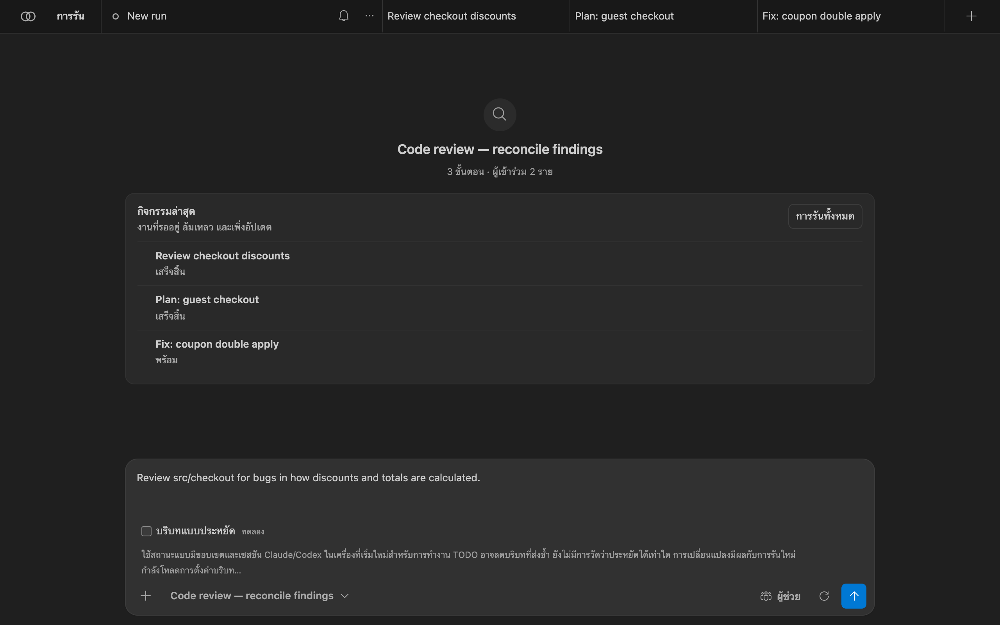
การใช้งาน Bachata
แผงของ Bachata
เปิดด้วย Bachata: เปิด หรือไอคอนในแถบกิจกรรม การรันแต่ละครั้งคือแท็บด้านบน และมีสามมุมมอง:
- “แชท”: คำขอของคุณและคำตอบของผู้เข้าร่วมแต่ละรายตามลำดับ
- “การดำเนินการ”: ขั้นตอนของไปป์ไลน์พร้อมสถานะ และผลลัพธ์ของการรัน
- “ทิศทาง”: เป้าหมายของโครงการ การตัดสินใจที่รอคุณอยู่ และข้อค้นพบที่ยอมรับแล้วแต่ยังต้องแก้ ครอบคลุมทุกการรัน
{kind=link}
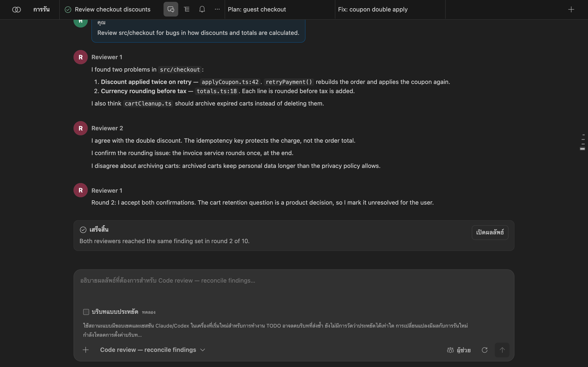
“การรัน” จะเปิดลิ้นชักการรัน: ค้นหาการรันและพรอมต์ แสดงการรันที่เก็บเข้าคลัง และเปิด “ทิศทาง” เมนู … ของแต่ละการรันใช้เปลี่ยนชื่อ ทำสำเนา เก็บเข้าคลัง หรือลบได้
{kind=link}
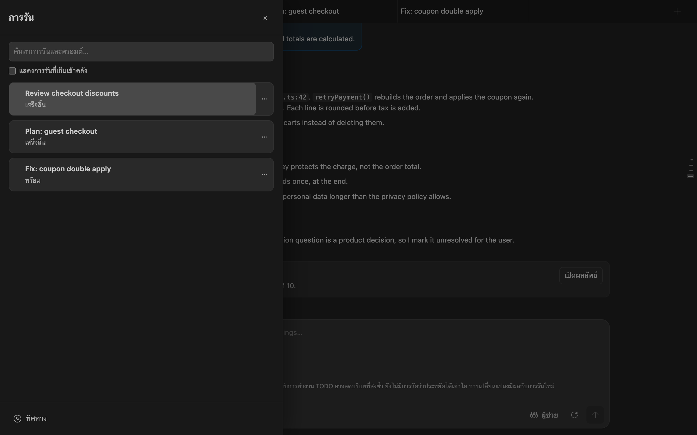
เลือกไปป์ไลน์
ตัวเลือกไปป์ไลน์อยู่ใต้ช่องพิมพ์ การค้นหาครอบคลุมชื่อ รหัส คำอธิบาย และบทบาทของผู้เข้าร่วม ตัวกรองแยกเวิร์กโฟลว์ทั่วไป เฉพาะทาง และภายใน ส่วนไปป์ไลน์ที่กำหนดเองจะเพิ่ม “กำหนดเอง” และ “ทั้งหมด” ตัวเลือกนี้เลือก งาน; “ผู้ช่วย” เลือก ผู้ให้บริการ.
{kind=link}
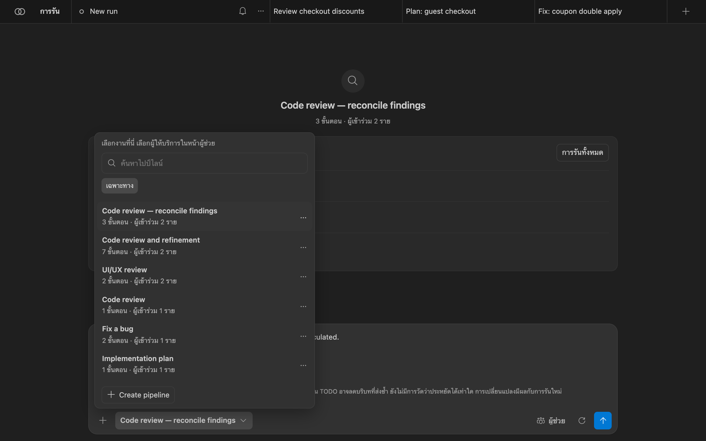
แต่ละขั้นตอนในไปป์ไลน์เป็นหนึ่งในนี้:
agent: ผู้เข้าร่วมหนึ่งรายหรือมากกว่าลงมือหนึ่งตา จะทำขนานกันหรือทำจนกว่าจะเห็นตรงกันก็ได้assignRoles: ผูกบทบาทที่คุณกำหนดไว้เข้ากับผู้ช่วยchecklist: แปลงข้อค้นพบที่ยอมรับแล้วเป็นรายการงานที่รัดกุมexecuteChecklist: ให้คอนโทรลเลอร์ดำเนินการรายการที่เลือก ต้องเป็นขั้นตอนสุดท้ายที่เปิดใช้
จำนวนรอบการหาข้อสรุปมีขีดจำกัด เมื่อถึงขีดจำกัด ไปป์ไลน์จะระบุว่าจะเกิดอะไรขึ้น: ให้คนตัดสิน ถือว่าล้มเหลว หรือให้หัวหน้าชี้ขาด การเห็นตรงกันเป็นเพียงการเลือกผลลัพธ์ของการรันหนึ่ง ไม่ได้พิสูจน์ว่าผลนั้นถูกต้อง ดู รายการไปป์ไลน์ที่มีมาให้.
กำหนดผู้ช่วย
“ผู้ช่วย” แสดงทุกบทบาทที่ไปป์ไลน์ที่เลือกต้องใช้ เลือกผู้ให้บริการของแต่ละบทบาท และเลือกโมเดลหากผู้ให้บริการรายงานไว้ การเปลี่ยนแปลงมีผลกับการรันนี้และถูกทำเครื่องหมายว่ามอบหมายใหม่ “คืนค่าเริ่มต้น” จะคืนค่าตามที่ไปป์ไลน์กำหนดไว้เอง
{kind=link}
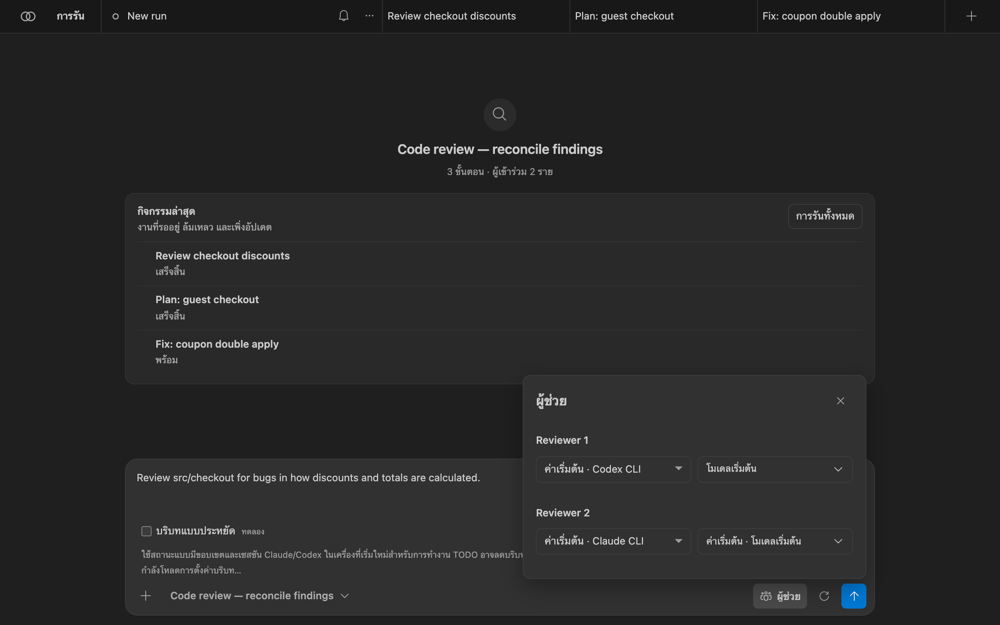
Bachata ไม่ได้มาพร้อมรายชื่อโมเดล เมื่อ Codex แสดงรายการโมเดลของตัวเองได้ Bachata จะแสดงรายการนั้นและปฏิเสธโมเดลที่ Codex ที่ติดตั้งไว้ไม่มี หากผู้ให้บริการแสดงรายการโมเดลไม่ได้ ชื่อที่คุณพิมพ์จะถูกส่งไปตามนั้น Bachata ไม่เคยเปลี่ยนผู้ให้บริการหรือโมเดลแทนคุณ หากต้องการห้ามผู้ให้บริการรายใดทำงาน ให้เพิ่มไว้ใน bachata.disabledProviders.
Optional typed-decision adapter
The browser action interpreter also exposes a guarded, controller-injected adapter seam for experiments such as Laya's system_one decision shape. It receives only bounded, read-only controller candidates and may accept only a complete, high-confidence classification of those existing IDs. Invalid, ambiguous, oversized or late responses fall back to the existing local model path and deterministic extraction.
อ่านข้อกำหนดของการรัน
ปุ่มรูปเฟืองข้างปุ่มส่งจะเปิด “การตั้งค่าการรัน”. “ตัวเลือกการรัน” (จำนวนรอบ โหมดจำนวนคงที่หรือจนกว่าจะไม่พบปัญหา และวิธีส่งมอบ) มีผลเฉพาะการรันนี้ “รายละเอียดการรัน” คือข้อกำหนดที่ Bachata สรุปไว้สำหรับการรันครั้งนี้โดยเฉพาะ:
- “การรับประกัน”: การรันนี้ให้ผลลัพธ์แบบใดได้บ้าง เช่น “อ่านอย่างเดียว”;
- “ผู้ให้บริการ” และความพร้อมของแต่ละราย
- “ขอบเขตและคอมมิต”: ไดเรกทอรีทำงาน พาธที่เขียนได้ อ่านได้ และพาธที่ได้รับการป้องกัน Bachata ไม่เคยสร้างคอมมิต
- “การตรวจพิสูจน์”: มีการตรวจของคอนโทรลเลอร์ใดทำงานบ้าง ถ้ามี
- “ขีดจำกัดของการรัน”, “การตัดสินใจของคน”, “ทางเลือกสำรอง”, “การสิ้นสุด”;
- “ผู้ให้บริการแต่ละรายได้รับอะไร”: บริบทที่ส่งออก สิ่งที่ยกเว้น และสิ่งที่ปกปิด แยกตามผู้ให้บริการ

หากมีสิ่งใดขวางการรัน เช่น ผู้ให้บริการที่ยังไม่พร้อมหรือนโยบายของที่เก็บโค้ดที่ปฏิเสธ ข้อกำหนดจะแสดงสิ่งนั้นไว้ และปุ่มส่งจะยังกดไม่ได้จนกว่าจะแก้ไขเสร็จ
อ่านผลลัพธ์
เปิด “การดำเนินการ” (ไอคอนรายการบนแท็บของการรัน) หรือเลือก “เปิดผลลัพธ์” ในแชท ด้านบนแสดงแต่ละขั้นตอนของไปป์ไลน์พร้อมสถานะ แถบด้านล่างบอกว่าเลือกข้อค้นพบไว้กี่รายการ และเสนอไปป์ไลน์ถัดไป
{kind=link}
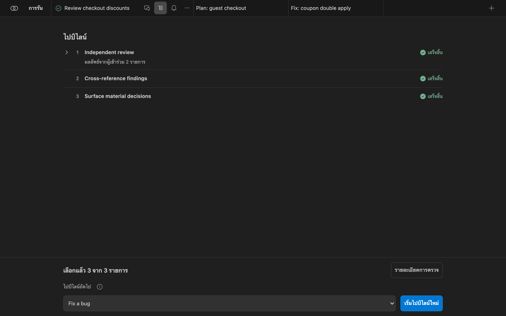
“รายละเอียดการตรวจ” จะเปิดผลลัพธ์ของการรัน:
- “การประเมิน” เช่น “เสร็จสิ้น · ตรวจโดยโมเดล · ยังไม่ได้พิสูจน์” ซึ่งบอกว่าการรันนี้จบลงอย่างไร ไม่ได้บอกว่าซอฟต์แวร์ถูกต้องหรือไม่
- “คำวินิจฉัยสุดท้าย” และใครเป็นผู้ให้คำวินิจฉัย เช่น มติเป็นเอกฉันท์ของผู้ตรวจทั้งสองราย
- “ข้อค้นพบ” แบ่งเป็นข้อค้นพบที่ ตรงกัน (ยอมรับหลังการโต้แย้ง) และข้อค้นพบที่ ยังไม่ตรงกัน ซึ่งต้องให้คุณยืนยัน แต่ละรายการมีตำแหน่ง หลักฐาน และข้อโต้แย้งที่ถูกหยิบยกขึ้นมา
- “รายละเอียดการประเมิน”: ความเสี่ยงที่ยังไม่สะสาง ช่องว่างของหลักฐาน และบัญชีหลักฐาน (ไฟล์ที่เปลี่ยน การตรวจสอบ และที่มาของคำวินิจฉัย)
![ผลลัพธ์การรัน: เสร็จสิ้น · ตรวจโดยโมเดล · ยังไม่ได้พิสูจน์ “ดูข้อค้นพบด้านล่าง การรันนี้ไม่มีอะไรให้นำไปใช้” คำวินิจฉัยสุดท้าย: ข้อค้นพบสองรายการได้รับการยอมรับหลังการโต้แย้ง หนึ่งข้อขัดแย้งต้องให้คุณตัดสิน โดยมติเป็นเอกฉันท์ของ Reviewer 1 (codex-app-server) และ Reviewer 2 (claude-code) ข้อค้นพบ: ดำเนินการได้ 2 รายการ ต้องให้คนตัดสิน 1 รายการ ข้อค้นพบที่ตรงกัน: “Discount applied twice on retry” ที่ src/checkout/applyCoupon.ts:42 และ “Currency rounding before tax” ที่ src/checkout/totals.ts:18 แต่ละรายการมีหลักฐานและข้อโต้แย้ง](../img/th/result-center.png)
“คัดลอกผลลัพธ์” จะคัดลอกบทสรุปที่อ่านได้ “เพิ่มเติม” ใช้เผยแพร่ข้อค้นพบไปยังแผง Problems เปิดการควบคุมซอร์ส และส่งออกการรันเป็นชุดข้อมูล JSON รายงานหลักฐานแบบ Markdown หรือข้อค้นพบแบบ SARIF ไฟล์ส่งออกไม่มี URL บทสนทนาของผู้ให้บริการหรือรหัสเซสชัน
มุมมอง “ทิศทาง”
“ทิศทาง” เก็บสิ่งสำคัญไว้ข้ามการรัน คุณจึงไม่ต้องไล่อ่านบันทึกบทสนทนา เปิดได้จากด้านล่างของลิ้นชักการรัน โดยจะแสดงเป้าหมาย การกระทำถัดไปที่เป็นประโยชน์ และสิ่งที่ต้องให้คุณจัดการ:
- “การตัดสินใจที่ต้องสะสาง”: คำถามที่ไปป์ไลน์หยิบยกขึ้นมาและเปลี่ยนทิศทาง พร้อมข้อแลกเปลี่ยนและหลักฐาน
- “ข้อค้นพบที่ต้องสะสาง”: ข้อค้นพบที่ผู้เข้าร่วมยังเห็นไม่ตรงกัน
- “ข้อค้นพบที่ยอมรับแล้วและรอการแก้ไข”, ทิศทางที่ยอมรับแล้วและเกณฑ์การยอมรับ ความคืบหน้าการตรวจ ชิ้นงาน และการตรวจของที่เก็บโค้ด
{kind=link}
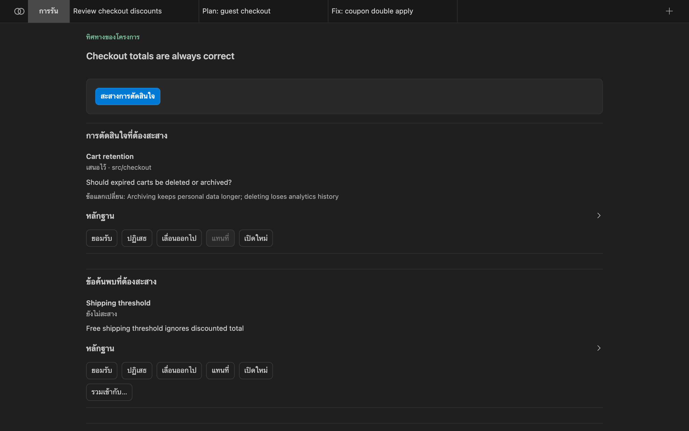
วิธีสะสางที่คุณบันทึกได้ เมื่อสถานะของรายการเอื้อให้ทำได้:
| วิธีสะสาง | ความหมาย |
|---|---|
| ยอมรับ | เป็นเรื่องจริงและ Bachata ควรดำเนินการตามนั้น |
| ปฏิเสธ | ไม่ใช่เรื่องจริง รายการจะออกจากส่วนที่ใช้งานอยู่และคงอยู่ในประวัติ |
| เลื่อนออกไป | เป็นเรื่องจริง แต่ยังไม่ใช่ตอนนี้ |
| แทนที่ | รายการที่ใหม่กว่าซึ่งมีอยู่แล้วเข้ามาแทนรายการนี้ |
| เปิดใหม่ | รายการที่ปิดไปแล้วกลับมาใช้งานอีกครั้ง ต้องมีเหตุผลเป็นลายลักษณ์อักษรและหลักฐานใหม่ที่มีน้ำหนัก |
คุณไม่จำเป็นต้องยอมรับข้อค้นพบที่ไปป์ไลน์ยอมรับไปแล้วหลังจากผู้เข้าร่วมมากกว่าหนึ่งรายโต้แย้ง คุณเข้ามาดูแลเฉพาะกรณียกเว้น ไม่มีอะไรถูกลบ รายการที่สะสางแล้วจะย้ายไปอยู่ในประวัติ
แก้ไขและนำไปใช้
การตรวจแบบอ่านอย่างเดียวไม่ได้สร้างสิ่งที่นำไปใช้ได้ สิ่งที่สร้างการเปลี่ยนแปลงคือการรันแก้ไข ที่ข้อค้นพบซึ่งยอมรับแล้ว ให้เลือก “แก้ไขข้อค้นพบ” ใน “ทิศทาง” หรือเลือกไปป์ไลน์ที่เขียนได้ เช่น Fix a bug ให้เป็นไปป์ไลน์ถัดไปในมุมมองการดำเนินการ
{kind=link}
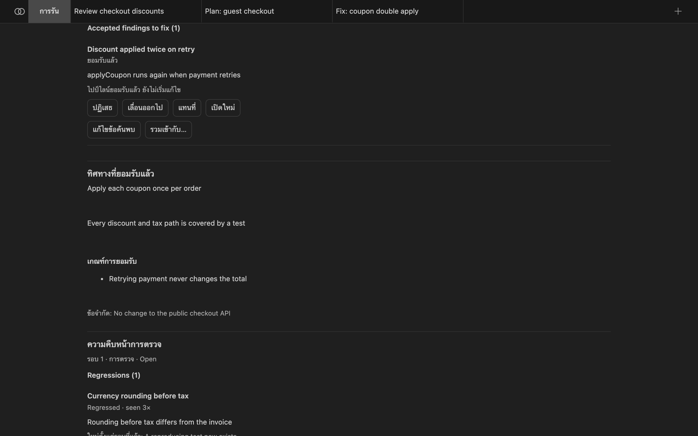
การรันแก้ไขจะได้รับพรอมต์ที่จำกัดอยู่ที่ข้อค้นพบนั้นรายการเดียว: หัวข้อ ตำแหน่ง หลักฐาน และข้อโต้แย้งที่ถูกหยิบยก Bachata เลือกไปป์ไลน์แก้ไขจาก bachata.fixPipelineId จากนั้นจากไปป์ไลน์ที่เลือกไว้ในการรันต้นทาง และสุดท้ายจากไปป์ไลน์ที่มีมาให้ชื่อ managed-fix ไปป์ไลน์แบบอ่านอย่างเดียวจะถูกปฏิเสธ
การนำงานที่เก็บไว้ไปใช้
เวิร์กโฟลว์บางแบบแก้ไขโฟลเดอร์ที่เลือกโดยตรง ส่วนแบบแยกส่วนจะเก็บการเปลี่ยนแปลงไว้ใน Git worktree ต่างหากจนกว่าคุณจะนำไปใช้ ข้อกำหนดของการรันจะบอกว่าเป็นแบบใด เมื่อคุณนำไปใช้:
- Bachata จะจัดงานนั้นเข้าสเตจในทรีทำงานของคุณบนสาขาปัจจุบัน และไม่สร้างคอมมิต คุณตรวจดูในการควบคุมซอร์สและคอมมิตเอง
- การนำไปใช้จะถูกปฏิเสธเมื่อการตรวจพิสูจน์ล้าสมัย ล้มเหลว หรือถูกยกเลิก การนำการรันที่ยังสรุปไม่ได้ไปใช้ถือเป็นการข้ามข้อกำหนดโดยเจตนา
- การนำไปใช้เพียงบางส่วนจะรันการตรวจของการรันนั้นซ้ำกับไบต์ที่คุณเลือกไว้พอดี
รอบการตรวจใหม่
การตรวจรอบใหม่จะเริ่มการตรวจอย่างอิสระกับสถานะปัจจุบันของที่เก็บโค้ด เซสชันของผู้ให้บริการจะถูกรีเซ็ต และไม่มีข้อสรุปเดิมถูกนำเข้าไปในพรอมต์ ข้อค้นพบเดิมจะถูกใช้เปรียบเทียบหลังการตรวจเท่านั้น ไม่ใช่ก่อนหน้า
เมื่อมีรอบที่สองในวงจรการตรวจเดียวกัน “ทิศทาง” จะรายงานสิ่งที่เปลี่ยนไป: ข้อค้นพบใหม่ ซ้ำ สะสางแล้ว และที่ถดถอย ข้อค้นพบที่เปิดใหม่เพราะหลักฐานใหม่ และการเปลี่ยนแปลงการตัดสินใจ ตัวตนของข้อค้นพบไม่ขึ้นกับถ้อยคำ การกล่าวซ้ำด้วยคำอื่นจึงนับเป็นข้อค้นพบเดียวที่เกิดขึ้นสองครั้ง
Bachata จะรายงานภาวะ อิ่มตัว ก็ต่อเมื่อการตรวจรอบใหม่หลายครั้งติดกันไม่ได้เพิ่มอะไรที่มีน้ำหนัก ข้อค้นพบที่ยอมรับแล้วถูกสะสาง การตัดสินใจหลักถูกปิด และการตรวจที่จำเป็นเป็นปัจจุบัน ภาวะอิ่มตัวหมายความว่าการตรวจซ้ำเลิกพบปัญหาที่มีน้ำหนักแล้ว ไม่ใช่ข้อพิสูจน์ความถูกต้อง
การตรวจรอบใหม่จะรันเฉพาะไปป์ไลน์แบบอ่านอย่างเดียวที่ให้ข้อค้นพบ ตั้งค่า bachata.freshReviewPipelineId เพื่อเลือกไปป์ไลน์เมื่อไปป์ไลน์ที่เลือกไว้ไม่เข้าเกณฑ์
แก้ไขไปป์ไลน์
ในการตั้งค่าการรัน ให้เลือก “แก้ไขไปป์ไลน์”, “ไปป์ไลน์ใหม่” หรือ “แยกสำเนาจากที่เลือก” การแก้ไขไปป์ไลน์ที่มีมาให้จะสร้างสำเนาขึ้นมา ตัวแก้ไขมีฟอร์ม แบบมีโครงสร้าง และโหมด JSON สำหรับกำหนดค่าที่แน่นอน ขั้นตอนสามารถจัดลำดับใหม่ ทำสำเนา และปิดใช้งานได้ “กรอบความปลอดภัย”, “ผู้ช่วย” และ “บทบาท” เป็นส่วนแยกต่างหาก
{kind=link}
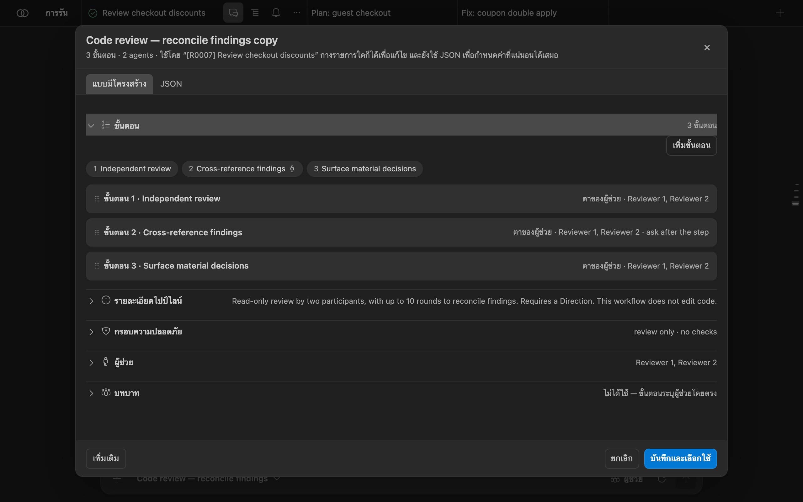
เปิด bachata.advancedMode เพื่อแสดงตัวแก้ไขแบบเต็ม: บทบาท การหาข้อสรุป ผลลัพธ์ที่มีชนิดข้อมูล จุดตัดสินใจของคน ความสามารถ โหมดสิทธิ์ นโยบายการอนุมัติ เทมเพลตพรอมต์ และนโยบายพาธ ไปป์ไลน์ส่งออกและนำเข้าเป็น JSON ได้ (เวอร์ชัน JSON ของไปป์ไลน์ 1) การรันแต่ละครั้งจะเก็บสแนปช็อตของไปป์ไลน์ที่ใช้เริ่มต้นไว้อย่างแม่นยำ
โครงการนำร่องในเครื่องที่ถูกระงับไว้
ลดการส่งบริบทซ้ำให้โมเดล
ขณะนี้ Bachata มีการพัฒนาโหมดการทำงานที่ประหยัดโทเคนสำหรับ Claude Code และ Codex เป็นครั้งแรกในซอร์สโค้ด เป้าหมายคือส่งสถานะที่เล็กที่สุดแต่เพียงพอสำหรับการตัดสินใจถัดไป แทนการส่งคำตอบเดิมทั้งหมด ผลการตรวจพิสูจน์ และประวัติบทสนทนาซ้ำ ๆ
bachata.executionContextMode ยังใช้เปิดได้ เมื่อเปิดอยู่ ตัวควบคุมจะแสดงในช่องเขียนของ Runs ในเมนู “ผู้ช่วย” เพื่อให้ปิดได้
legacy ยังเป็นค่าเริ่มต้น การรันที่กำลังทำงานและที่กู้คืนได้จะคงโหมดที่บันทึกไว้ ไม่มีการอ้างเรื่องโทเค็น ค่าใช้จ่าย ความหน่วง หรือคุณภาพ
ทำไมสิ่งนี้อาจช่วยได้
- ผู้ให้บริการในเครื่องเก็บบทสนทนาไว้ได้ ขณะที่ Bachata ก็ส่งการส่งต่อสถานะอย่างชัดเจนไปด้วย
- รอบการหาข้อสรุปอาจส่งคำตอบเต็มของผู้เข้าร่วมรายอื่นเข้าไปในรอบถัดไป
- งานผ่านเบราว์เซอร์อาจต้องใช้คำตอบของโมเดลแยกกันสำหรับการเปลี่ยนแปลงและสำหรับการตรวจของคอนโทรลเลอร์ที่กำหนดไว้ล่วงหน้า
- ขีดจำกัดจำนวนไบต์ในปัจจุบันกันไม่ให้ข้อมูลบานปลาย แต่ไม่ได้สร้างหลักฐานที่ย้อนกลับมาดูได้อย่างแม่นยำ
แผนการทยอยใช้งาน
- ทำแล้ว: เก็บหลักฐานที่รับไว้อย่างแม่นยำ จัดเก็บพรอมต์ที่ Bachata เป็นเจ้าของ คำตอบที่ได้รับ และหลักฐานของคอนโทรลเลอร์ ก่อนจะสร้างตัวอย่างแบบย่อ หากเก็บหลักฐานที่แม่นยำไม่ได้ การทำงานแบบย่อจะไม่เริ่มต้น
- ทำแล้ว จากนั้นระงับไว้: นำร่องสถานะในเครื่องแบบมีขอบเขต เริ่มเซสชัน Claude Code หรือ Codex ใหม่ด้วยสถานะงานแบบมีชนิด การสังเกตล่าสุดของตัวควบคุม และการอ้างอิงหลักฐานแบบจำกัดขอบเขต โฟลว์ปัจจุบันยังเป็นค่าเริ่มต้น โครงการนำร่องแบบออฟไลน์ไม่พบการประหยัด จึงระงับขั้นนี้ไว้
- ส่งต่อข้อสรุปอย่างปลอดภัย ส่งต่อข้อตกลง ข้อโต้แย้ง การระบุที่มา และการตัดสินใจที่ยังไม่สะสาง โดยไม่ถือว่าข้อคัดค้านที่ตกหล่นได้รับการสะสางแล้ว
- เพิ่มการเรียกคืนหลักฐานในเบราว์เซอร์และการรวมการกระทำอย่างปลอดภัย ให้คอนโทรลเลอร์เป็นผู้ให้หน้าหลักฐานที่แม่นยำ และรวมการเปลี่ยนแปลงเข้ากับการตรวจที่ได้รับอนุญาตแล้วเฉพาะในจุดที่ขอบเขตของการอนุมัติและการกู้คืนยังชัดเจน
ขอบเขตความปลอดภัย
คอนโทรลเลอร์ยังคงดูแล Git ขอบเขตการเขียน การตรวจพิสูจน์ การรวมงาน และการกู้คืน สถานะที่ไม่ถูกต้อง ล้าสมัย ไม่สมบูรณ์ หรือใหญ่เกินไปจะถือว่าล้มเหลวโดยปลอดภัย หลักฐานที่รับไว้อย่างแม่นยำยังส่งออกได้ ประวัติส่วนตัวของผู้ให้บริการจะไม่ถูกอ้างว่าเก็บไว้แล้ว และไม่มีการเพิ่มชั้นเก็บเทเลเมทรีหรือการวัดระหว่างทำงานใด ๆ
อ่าน เอกสารออกแบบเชิงเทคนิค และ งานวิจัย SoL-Pi จากภายนอกที่เป็นจุดตั้งต้นของการศึกษานี้ ผลที่รายงานในงานวิจัยไม่ใช่ผลของ Bachata
Browser Bridge
ใช้แชทในเบราว์เซอร์ของคุณจาก Bachata
Bachata Browser Bridge เป็นส่วนขยาย Chrome แยกต่างหาก มันเชื่อม Bachata ใน VS Code เข้ากับเว็บแชท AI อย่าง ChatGPT และ Claude เพื่อให้บทสนทนาในเบราว์เซอร์เป็นผู้เข้าร่วมในไปป์ไลน์ได้ เมื่อขั้นตอนที่ใช้เบราว์เซอร์ทำงาน Bridge จะส่งข้อความไปยังแชทที่คุณเชื่อมไว้และนำคำตอบกลับมาที่ VS Code
คุณต้องใช้มันเฉพาะกับผู้เข้าร่วมแบบเบราว์เซอร์เท่านั้น Codex และ Claude Code ไม่ได้ใช้
สิ่งที่ต้องมี
- Chrome 116 ขึ้นไป
- หน้าต่าง VS Code ในเครื่องที่มี Bachata ทั้ง Remote SSH, WSL และ Codespaces เข้าถึงเบราว์เซอร์ในเครื่องไม่ได้
- รุ่นของ Bridge ที่เวอร์ชันโปรโตคอลตรงกับรุ่น Bachata ของคุณ หากไม่ตรงกันจะถูกปฏิเสธ ไม่ใช่ลดความสามารถลง ให้อัปเกรดทั้งคู่พร้อมกัน
- แท็บ ChatGPT หรือ Claude ที่เข้าสู่ระบบแล้ว หรือเว็บแชทอื่นที่คุณตั้งค่าเอง
ติดตั้ง Bridge
- เปิด Bachata Browser Bridge ใน Chrome Web Store.
- เลือก “เพิ่มใน Chrome” แล้วยืนยันการติดตั้ง
- อัปเดต Bachata สำหรับ VS Code และ Browser Bridge ไปพร้อมกัน เพื่อให้เวอร์ชันโปรโตคอลตรงกัน
สำหรับการติดตั้งแบบออฟไลน์หรือเพื่อการพัฒนา ให้ดาวน์โหลดไฟล์ ZIP และค่าตรวจสอบจาก หน้าเผยแพร่อย่างเป็นทางการ ตรวจสอบด้วย shasum -a 256 bachata-browser-bridge-<version>.zip แตกไฟล์ แล้วโหลดโฟลเดอร์นั้นจาก chrome://extensions โดยเปิดโหมดนักพัฒนาไว้ การสร้างจากซอร์สจะได้โฟลเดอร์ dist/ ที่โหลดได้ ส่วนรากของที่เก็บโค้ดโหลดไม่ได้
จับคู่กับ VS Code
- ใน Bachata ให้เปิด “ผู้ช่วย” แล้วกำหนด Browser Bridge ให้บทบาทหนึ่ง ป้ายสถานะ Bridge จะปรากฏด้านบนของหน้าผู้ช่วย เมื่อยังไม่จับคู่จะขึ้นว่า “จับคู่ Bridge” ให้กดที่ป้ายนั้น
- เลือก “คัดลอกรหัสจับคู่”. “ค้นหาเบราว์เซอร์” จะเริ่มค้นหาอีกครั้ง “รีเซ็ตการจับคู่” จะออกรหัสใหม่
- เปิดหน้าต่าง Bridge ใน Chrome แล้วเลือก Paste & connect หากคุณพิมพ์หรือวางรหัสลงในช่องเอง ให้เลือก “Connect to VS Code” แทน
{kind=link}
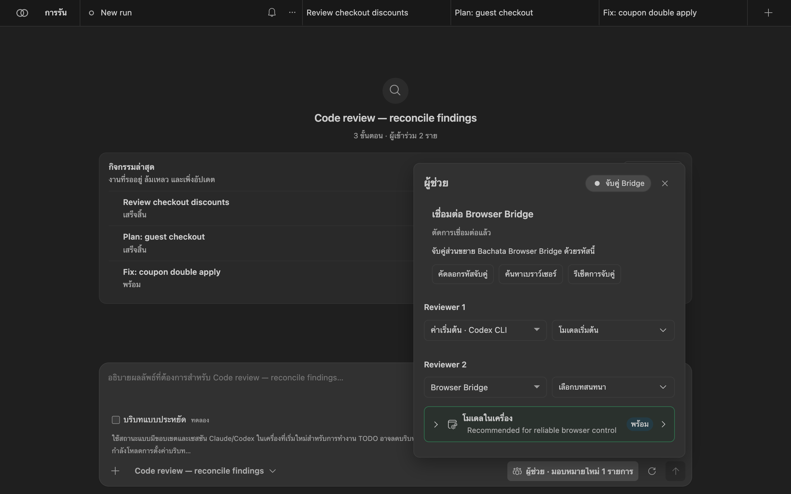

ที่อยู่ในเครื่องจะถูกกรอกให้อัตโนมัติ เปิด “Connection settings” เฉพาะเมื่อ VS Code แสดงที่อยู่อื่น Bridge รองรับการเชื่อมต่อเดียว ดังนั้นในแต่ละโปรไฟล์ผู้ใช้จะมีหน้าต่าง VS Code เพียงหน้าต่างเดียวที่ครอบครอง Bridge ในเวลาหนึ่ง หน้าต่างอื่นยังใช้ Codex และ Claude Code ได้
เลือกแชท
- เปิดบทสนทนาใน ChatGPT หรือ Claude แล้วเข้าสู่ระบบ
- ในหน้าต่างนั้น ให้เลือก “Refresh tabs” แต่ละแถวแสดงผู้ให้บริการ ชื่อเรื่อง ความพร้อม และข้อจำกัดถ้ามี “Details” แสดงข้อมูลระบุตัวของแท็บและบทสนทนา
- เลือก “Use this chat” ที่บทสนทนาซึ่งพร้อมใช้งาน ปุ่มนี้มีเฉพาะแถวที่พร้อมและเฉพาะขณะเชื่อมต่ออยู่เท่านั้น
- ในส่วน “ผู้ช่วย”ของ Bachata ให้เลือกบทสนทนานั้นสำหรับบทบาทที่ใช้เบราว์เซอร์


{kind=link}
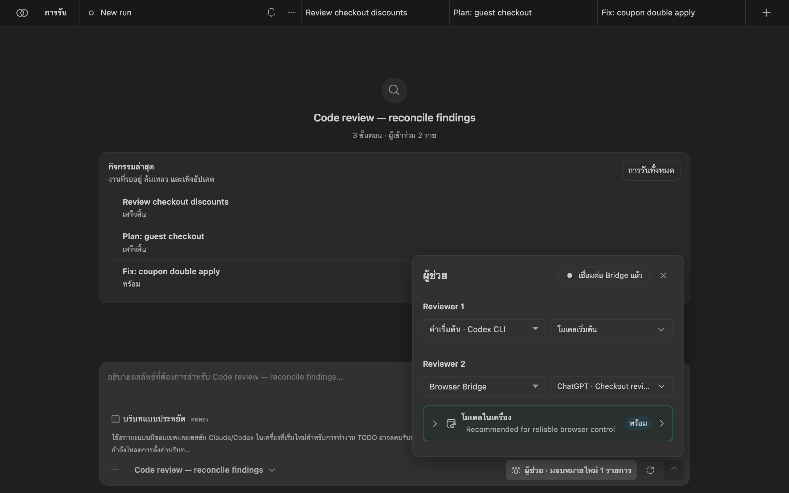
การผูกยังอยู่แม้ปิดหน้าต่างหรือรีสตาร์ตโปรเซสเบื้องหลังของเบราว์เซอร์ คุณต้องผูกใหม่เฉพาะเมื่อแท็บถูกปิด เปลี่ยนไปเว็บอื่น หรือมีการเปลี่ยนบทสนทนาด้วยมือ
เว็บแชทอื่น
สำหรับเว็บไซต์อื่นนอกจาก ChatGPT และ Claude ให้เปิด เว็บไซต์อื่น ในหน้าต่างนั้นแล้วเลือก “Set up current website” จากนั้นอนุญาตต้นทางที่แสดงไว้ ปิดหน้าต่างแล้วใช้แผงตั้งค่าบนหน้าเว็บ: ตรวจหาอัตโนมัติหรือเลือกตัวควบคุมเอง (ช่องพิมพ์และพื้นที่บทสนทนาจำเป็นต้องมี ส่วนปุ่มส่ง ปุ่มหยุด และปุ่มเริ่มบทสนทนาใหม่ไม่บังคับ) แล้วตรวจความถูกต้อง การตรวจนี้ไม่ส่งข้อความแชท
{kind=link}
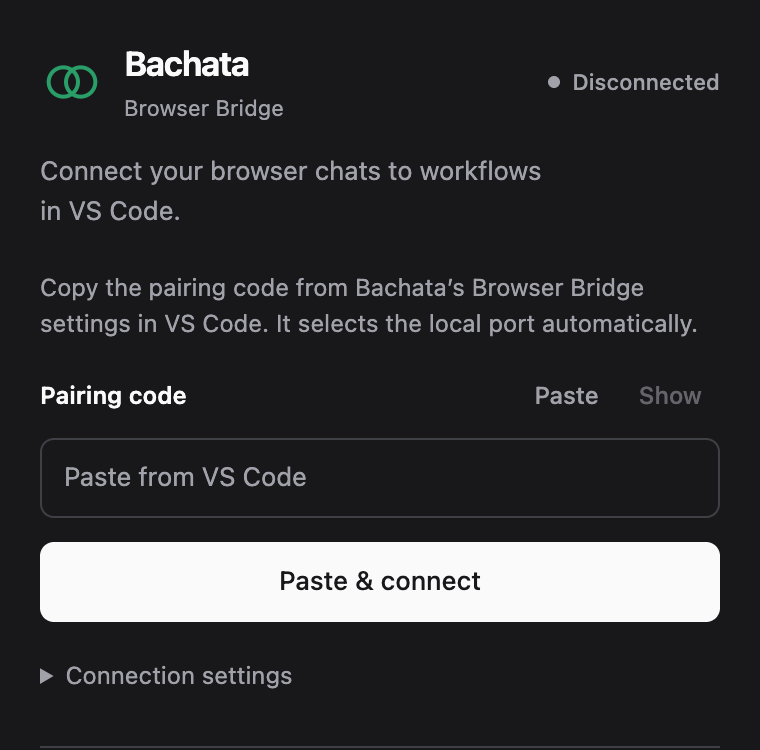
เว็บไซต์อื่นรับเฉพาะข้อความ ไม่รองรับรูปภาพและไฟล์ที่ดาวน์โหลดได้ เว็บที่ไม่มีปุ่มส่งและปุ่มหยุดที่ผ่านการตรวจจะใช้ได้กับงานที่ทำเอง แต่ใช้กับการรันแบบมีการจัดการที่ไม่มีคนดูแลไม่ได้ เว็บที่คุณยังไม่ผูกจะไม่ถูกค้นพบ และ Bridge จะไม่เปิดแท็บแบบนั้นให้คุณเอง
ข้อจำกัด
- เว็บไซต์ของผู้ให้บริการเปลี่ยนได้โดยไม่แจ้งล่วงหน้า รุ่นของ Bridge ที่ใช้งานได้เป็นหลักฐานเฉพาะกับเวอร์ชันของเว็บที่เคยทดสอบไว้เท่านั้น
- Bridge ไม่ทำการเข้าสู่ระบบหรือ CAPTCHA ให้อัตโนมัติ และไม่เพิ่มข้อความพรอมต์ที่ซ่อนไว้
- หลังเกิดความล้มเหลว ขั้นตอนกู้คืนจะแสดงสิ่งที่บันทึกไว้ และไม่ส่งพรอมต์ซ้ำโดยอัตโนมัติ
ข้อมูลอ้างอิง
คำสั่ง
คำสั่งทั้งหมดอยู่ใน Command Palette ภายใต้ Bachata:.
| คำสั่ง | มันทำอะไร |
|---|---|
| เปิด | เปิดแผงของ Bachata |
| ตั้งค่า | เลือกเป้าหมายและจำนวนผู้ช่วยที่จะทำงานนั้น |
| วินิจฉัย | ตรวจผู้ให้บริการ Git และข้อกำหนดของไปป์ไลน์ พร้อมแนวทางแก้ |
| ตรวจไฟล์ / ตรวจส่วนที่เลือก | เตรียมฉบับร่างการตรวจสำหรับไฟล์ปัจจุบันหรือส่วนที่เลือก |
| ตรวจส่วนต่างที่จัดเตรียมไว้ / ตรวจการเปลี่ยนแปลงที่ยังไม่คอมมิต | เตรียมฉบับร่างการตรวจสำหรับการเปลี่ยนแปลงในเครื่อง |
| ตรวจคอมมิต / ตรวจช่วงคอมมิต / ตรวจสาขาเทียบกับสาขาฐาน | เตรียมฉบับร่างการตรวจสำหรับประวัติ Git |
| เผยแพร่ข้อค้นพบไปยังแผง Problems | แสดงข้อค้นพบในแผง Problems |
| แก้ไขรายการวินิจฉัย | เตรียมฉบับร่างการแก้ไขสำหรับรายการวินิจฉัยจากตัวแก้ไขหรือแผง Problems |
| อธิบายไปป์ไลน์ | อธิบายว่าไปป์ไลน์นั้นทำอะไร |
| ตัวตรวจของที่เก็บโค้ด / ตั้งค่าตัวตรวจและนโยบายของที่เก็บโค้ด | ประกาศการตรวจของที่เก็บโค้ดที่การรันสามารถเรียกใช้ได้ |
| รัน TODO.md, ดูแผน TODO ล่วงหน้า, ทำต่อ / หยุด / ยกเลิกการรัน TODO, แสดงสถานะการรัน TODO | จัดลำดับงานจากไฟล์ TODO.md ของ Bachata ที่ได้รับมา |
| ปรับปรุงโครงการนี้ | เรียกใช้เวิร์กโฟลว์การปรับปรุงตนเอง |
| เปิดดูชุดข้อมูลการรัน / เล่นซ้ำชุดข้อมูลการรัน | เปิดบันทึกการรันที่ส่งออกไว้ |
| บันทึกหลักฐานภายนอก | บันทึกหลักฐานที่เกิดขึ้นนอก Bachata |
| ข้อมูลในเครื่อง | ตรวจดูและลบข้อมูลการรันในเครื่อง |
| สิทธิ์ครอบครองพื้นที่ทำงาน | แสดงว่าหน้าต่าง VS Code ใดสามารถรันงานในพื้นที่ทำงานนี้ได้ |
| ล้างการกักกันทรัพยากร | ปลดทรัพยากรที่ใช้ร่วมกันซึ่งถูกกักกันไว้ |
ไปป์ไลน์ที่มีมาให้
| ไปป์ไลน์ | คำอธิบาย |
|---|---|
| Code review | การตรวจแบบอ่านอย่างเดียวโดยผู้เข้าร่วมหนึ่งราย ข้อค้นพบมาจากแหล่งเดียว |
| Code review — reconcile findings | การตรวจแบบอ่านอย่างเดียวโดยผู้เข้าร่วมสองราย ใช้ได้ถึง 10 รอบเพื่อปรับข้อค้นพบให้ตรงกัน ต้องมี “ทิศทาง” |
| Code review and refinement | ผู้เข้าร่วมสองรายตรวจและปรับข้อค้นพบให้ตรงกันภายใน 4 รอบ จากนั้นผู้ลงมือจะแก้ข้อค้นพบที่ยืนยันแล้วภายในขอบเขตที่ประกาศไว้ |
| UI/UX review | การตรวจแบบอ่านอย่างเดียวด้านการใช้งาน การเข้าถึง และลำดับชั้นทางสายตา โดยผู้ตรวจสองราย |
| Review and prepare tasks | ผู้เข้าร่วมสองรายปรับข้อค้นพบให้ตรงกัน แล้วจัดทำรายการงานที่เลือกได้ |
| Identify decisions for you | ผู้เข้าร่วมสองรายปรับตัวเลือกที่ต้องใช้วิจารณญาณของคนให้ตรงกัน แบบอ่านอย่างเดียว |
| Implementation plan | จัดทำแผนการลงมือโดยไม่แก้ไขไฟล์ |
| Implementation plan — reconcile proposals | ผู้วางแผนสองรายปรับแผนให้ตรงกันภายใน 10 รอบ ต้องมี “ทิศทาง” |
| Fix a bug | วินิจฉัยและลงมือแก้ไขด้วยผู้เข้าร่วมหนึ่งราย เรียกใช้การตรวจของคอนโทรลเลอร์ที่ประกาศไว้ และไม่สร้างคอมมิต |
| Fix a bug — reviewed tasks | ผู้เข้าร่วมสองรายปรับผลวินิจฉัยให้ตรงกัน จากนั้นคุณเลือกงานที่มีขอบเขตให้คอนโทรลเลอร์ลงมือ |
| Fix within a declared scope | ผู้ลงมือหนึ่งรายทำงานภายในพาธที่ตั้งค่าไว้ คอนโทรลเลอร์เรียกใช้การตรวจที่ประกาศไว้ ต้องมี “ทิศทาง” |
| Diagnose and fix — model review | ผู้เข้าร่วมสองรายปรับผลวินิจฉัยให้ตรงกัน ลงมือแก้ไข และตรวจงานนั้น การตรวจพิสูจน์คือการตรวจโดยโมเดล |
| Deliver a feature | ปรับความต้องการและการออกแบบให้ตรงกัน แล้วลงมือและตรวจภายในขอบเขตที่ประกาศไว้ พร้อมการตรวจของคอนโทรลเลอร์ |
| Product direction review | ตรวจทางเลือกด้านผลิตภัณฑ์และปรับข้อเสนอแนะให้ตรงกัน ต้องมี “ทิศทาง” |
ไปป์ไลน์ที่ทำเครื่องหมายว่า “ภายใน” ในตัวเลือก คือขั้นตอนของคอนโทรลเลอร์สำหรับการจัดการ TODO และการปรับปรุงตนเอง
การตั้งค่าที่ใช้บ่อย
| การตั้งค่า | ค่าเริ่มต้น | จุดประสงค์ |
|---|---|---|
bachata.codexCommand | codex | ไฟล์โปรแกรมสำหรับ app server ของ Codex |
bachata.claudeCommand | claude | ไฟล์โปรแกรมสำหรับ Claude Code |
bachata.preferredProvider | auto | ผู้ให้บริการที่จะใช้ก่อน เมื่อไปป์ไลน์เสนอมากกว่าหนึ่งราย |
bachata.disabledProviders | [] | ผู้ให้บริการที่ Bachata ต้องไม่เรียกใช้ |
bachata.advancedMode | false | แสดงตัวแก้ไขไปป์ไลน์แบบเต็ม |
bachata.notificationMode | material | Bachata จะแสดงการแจ้งเตือนแบบใด |
bachata.fixPipelineId | เว้นว่าง | ไปป์ไลน์ที่ใช้สำหรับ “แก้ไขข้อค้นพบ”. |
bachata.freshReviewPipelineId | เว้นว่าง | ไปป์ไลน์ที่ใช้ตรวจรอบใหม่เมื่อไปป์ไลน์ที่เลือกไม่เข้าเกณฑ์ |
bachata.maxPipelineIterations | 10 | จำนวนรอบต่อเนื่องสูงสุดของการรันหนึ่งครั้ง |
bachata.browserBridgePort | 43127 | พอร์ต loopback ที่ Browser Bridge เชื่อมต่อไป |
bachata.todoFile | TODO.md | รายการงานที่การจัดการ TODO ใช้ |
การตั้งค่าที่ขยายสิ่งที่การรันทำได้ เช่น โหมดสิทธิ์และไดเรกทอรีทำงานภายนอก จะถูกอ่านจากการตั้งค่าของผู้ใช้หรือของเครื่องเท่านั้น ที่เก็บโค้ดที่คุณเปิดจึงให้สิทธิ์เพิ่มแก่ตัวเองไม่ได้
ความเป็นส่วนตัว
Bachata ทำงานกับสำเนาโค้ดในเครื่องของคุณ ไม่มีบัญชี Bachata บริการบนคลาวด์ หรือการเก็บเทเลเมทรี พรอมต์ โค้ดที่เลือก และคำตอบจะถูกส่งไปยังผู้ให้บริการที่คุณเลือก ข้อกำหนดของการรันจะแสดงว่าผู้ให้บริการแต่ละรายได้รับอะไรก่อนเริ่มรัน ข้อมูลรับรองของผู้ให้บริการยังอยู่กับ CLI หรือเซสชันเบราว์เซอร์ของผู้ให้บริการนั้นเอง
เกี่ยวกับภาพหน้าจอ
ภาพหน้าจอแสดงแผง Bachata จริง (dist/webview.js) และหน้าต่าง Bridge จริง ซึ่งเรนเดอร์ใน Chrome นอก VS Code ด้วยสีของธีม Dark Modern ของ VS Code ส่วนที่เก็บโค้ด demo-shop รวมถึงการรัน ข้อค้นพบ การตัดสินใจ และแท็บแชท เป็นข้อมูลสาธิตที่สมมติขึ้น ใน VS Code แผงนี้จะปรากฏอยู่ในแท็บของตัวแก้ไข